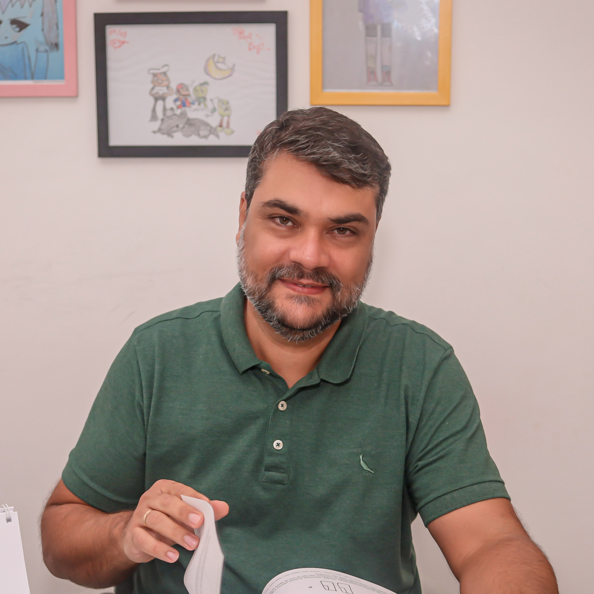

Instituto Luria de Neuropsicologia
Cuidando da saúde mental e neurológica com excelência e humanização. Nossa missão é proporcionar atendimento especializado, diagnóstico preciso e tratamento eficaz.
Agende uma ConsultaSobre Nós
Conheça o Instituto Luria
O Instituto Luria de Neuropsicologia e Promoção a Saúde foi inaugurado em 2010 e, desde então, tem como objetivo promover um espaço para atendimento clínico multiprofissional assim como divulgar a psicologia histórico-cultural e a teoria da atividade a partir de cursos, grupos de estudo, programas de prática-supervisionada e estágio.
O Instituto Luria é dirigido pelos psicólogos e mestres em diagnóstico e intervenção neuropsicológica: Caio Morais e Camila Borges.
No Instituto Luria, acreditamos que cada pessoa é única e merece um atendimento personalizado que considere suas necessidades específicas, histórico e contexto de vida.
Nossos Serviços
Avaliação completa das funções cognitivas através de testes padronizados, entrevistas e observação clínica, resultando em um relatório detalhado com diagnóstico e recomendações.
Reabilitação de funções cognitivas, como memória, atenção, linguagem e funções executivas. O foco é promover a recuperação ou compensação das funções afetadas, melhorando a qualidade de vida do paciente.
Atendimento psicológico individual para questões emocionais, comportamentais e adaptativas, com abordagens específicas para diferentes transtornos e condições.
Identificação de dificuldades de aprendizagem e desenvolvimento de estratégias personalizadas para superá-las, em colaboração com escolas e educadores.
Para profissionais
Supervisão para profissionais da psicologia que desejam aprimorar sua prática clínica à luz da abordagem histórico-cultural e teoria da atividade. Sessões com dicussão, acompanhamento e orientação de casos clínicos, itegrando teoria e prática.
Curso com Supervisão para profissionáis de piscologia que queiram aprofundar ou inicar a pratica clínica em neuropsicologia, com acesso a instrumentos, teste e orientações para avaliação neuropsicológica.
Aluguel de salas para profissionáis de psicologia, terapia ocupacional, psicopedagogia e fonoaudiologia.
Depoimentos
"A participação no curso de prática supervisionada está sendo fundamental para consolidar os conhecimentos teóricos e associar com a prática. Um dos pontos mais significativos do curso é o contato com novos instrumentos de avaliação. Ter a oportunidade de aprender sobre diferentes testes, compreendendo sobre seus objetivos, fundamentos teóricos e formas de aplicação, é muito enriquecedor."
"Durante o processo, o curso ajuda a realizar as avaliações com mais segurança. Além disso, o aprendizado sobre a correção e interpretação dos testes está sendo essencial. Pude perceber o quanto cada detalhe observado durante a aplicação pode refletir aspectos importantes do funcionamento cognitivo e emocional do paciente. A supervisão é um espaço muito bom para tirar dúvidas, discutir casos e compreender como transformar os dados obtidos em informações clínicas relevantes!"
Andressa Fonseca Borges Lopes - CRP 03/32177
Curso com Pratica Supervisionada
"A experiência com o curso de prática supervisionada tem sido enriquecedora contribuindo na melhoria do meu raciocínio clínico, na compreensão de processos cognitivos e a forma com que analiso dados. As supervisões são marcadas por uma relação de parceria, aprendizado e trocas, o que têm me proporcionado maior segurança em minha prática clínica e ampliação do meu repertório de habilidades, especialmente na observação das sutilezas do comportamento e direcionamentos de um olhar cuidadoso sobre o outro, com enfoque na subjetividade de cada perfil avaliado."
Luisa Rachel Barbosa Ribeiro Magalhães Ribeiro - CRP 03/32199
Curso com Pratica Supervisionada
“Participar da Prática Supervisionada em Neuropsicologia do Instituto Luria tem sido um processo de muito aprendizado e amadurecimento profissional. A supervisão cuidadosa, ética e baseada na prática clínica real contribui diretamente para uma atuação mais segura, sensível e responsável.”
Célia Santos - Psicóloga/Neuropsicóloga - CRP 03/19528
Curso com Pratica Supervisionada
Nossa Equipe

Caio Pereira Gottschalk Morais
Neuropsicólogo - CRP 03/3085
Mestre em Diagnóstico e Reabilitação Neuropsicológica pela Universidade Autônoma de Puebla, México. Atua em avaliação e intervenção neuropsicológica e em psicoterapia com crianças, adolescentes e adultos. Ministra aulas em cursos de pós-graduação e cursos livres. Realiza supervisão de profissionais da área de Neuropsicologia. Sócio do Instituto Luria de Neuropsicologia.
Camila Borges Santos Carvalho
Neuropsicóloga - CRP 03/13368
Mestre em Diagnóstico e Reabilitação Neuropsicológica pela Universidade Autônoma de Puebla, México. Atua em avaliação e intervenção neuropsicológica e em psicoterapia com crianças, adolescentes e adultos. Ministra aulas em cursos livres. Realiza supervisão de profissionais da área de Neuropsicologia. Sócia do Instituto Luria de Neuropsicologia.
Viviane Abbehusen Soledade
Psicopedagoga / Psicóloga - CRP 03/32771
Psicopedagoga, Pedagoga, Especialista em Neuropsicologia. Atua na avaliação e intervenção psicopedagógica, rastreio da Síndrome de Irlen e adaptação curricular de material escolar.
Perla Mendoza Villaverd
Psicóloga - CRP 03\4563
Psicóloga e especialista em Neuropsicologia pela UFBA, com 14 anos de atuação na equipe da rede Sarah de Hospitais de Reabilitação. Atua na investigação diagnóstica, reabilitação, treino familiar e psicoeducação de adultos e idosos, e com formação e supervisão de profissionais da área. Possui expertise em pacientes com doenças neurodegenerativas, lesão adquirida e neurodiversidade em adultos.
Beatriz Brandão Gomes
Psicóloga - CRP 03/32753
Psicóloga especialista em Avaliação Neuropsicológica e Terapia Cognitivo-Comportamental, com atuação voltada para a compreensão das funções cognitivas, emocionais e comportamentais ao longo do desenvolvimento. Atua também na avaliação de adultos com demandas relacionadas à memória, atenção, funções executivas, saúde mental e compreensão do funcionamento cognitivo.
Daniel Vieira Pitanga
Psicólogo - CRP 03/31419
Olá! Sou Daniel Vieira Pitanga, Psicólogo, cursando formação em Neuropsicologia e Terapia Cognitivo Comportamental (TCC). Meu trabalho une acolhimento humano e base científica para oferecer psicoterapia e avaliação neuropsicológica. Ajudo você a compreender seus pensamentos e emoções, desenvolvendo estratégias para maior autonomia e lidar com os desafios. Na avaliação, realizo um mapeamento detalhado das funções cognitivas para um diagnóstico preciso e intervenção personalizada. Meu compromisso é proporcionar um espaço seguro, ético e transformador para a sua saúde mental.
Entre em Contato
Informações de Contato
Endereço
Rua Dr. José Peroba, 325, Edficio Elite Comercial - sala 1206 e 1207
Costa Azul, Salvador, Bahia.
Telefone

Horário de Funcionamento
Segunda a Sexta: 8h às 18h
Sábado: 8h às 12h